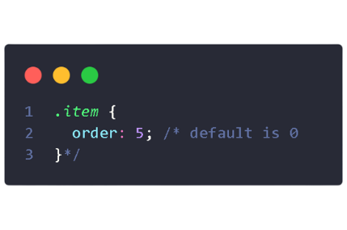
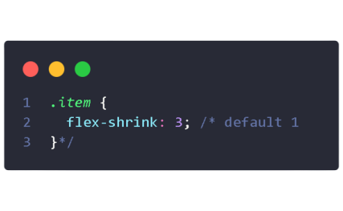

Layout
Flex
Box

Um guia completo para layout CSS flexbox.
Este guia completo explica o minímo sobre
flexbox, focando em todas as diferentes
propriedades possíveis para o elemento pai
(o contêiner flex) e os elementos filho (os itens flex).
Ele também inclui histórico, demonstrações, padrões
e um gráfico de suporte do navegador.
Isso define um contêiner flexível; inline ou block dependendo dovalor fornecido. Ele habilita um contexto flexível para todos os seus filhos diretos.

Observe que as colunas CSS não têm efeito em um contêiner flexível.

Isso estabelece o eixo principal, definindo assim a direção em que os itens flexíveis são colocados no contêiner flexível. Flexbox é (além da embalagem opcional) um, conceito de layout de direção única. Pense nos itens flexíveis como principalmente dispostos em linhas horizontais ou colunas verticais.
row (default):da esquerda para a
direita em ltr; direita para
esquerda em rtl.
row-reverse:da direita para a,
esquerda em ltr; da esquerda para
a direita em rtl.
column:igual o row, mas de cima
para baixo.
column-reverse:igual ao reverso
da row, mas de baixo para cima
Por padrão, todos os itens flexíveis tentarão caber em uma linha. Você pode alterar isso e permitir que os itens sejam agrupados conforme necessário com essa propriedade.
nowrap (padrão)
: todos os itens flexíveis estarão em uma linha.
wrap: os itens flexíveis serão agrupados em várias linhas, de cima para baixo.
wrap-reverse: os itens flexíveis serão agrupados
em várias linhas de baixo para cima.
Isso define o alinhamento ao longo do eixo principal. Ele ajuda a distribuir espaço livre extra quando todos os itens flexíveis em uma linha são inflexíveis ou são flexíveis, mas atingiram seu tamanho máximo. Ele também exerce algum controle sobre o alinhamento dos itens quando eles ultrapassam a linha.
flex-start (padrão): os itens são empacotados no início da flex-direction.
flex-end: os itens são empacotados no final da flex-direction.
start
: os itens são empacotados no início da direção do modo de escrita.
end: os itens são empacotados no final da direção do modo de escrita.
left: os itens são empacotados em direção à borda esquerda do contêiner, a menos que isso não faça sentido com o flex-direction, então ele se comporta como start.
right: os itens são empacotados na borda direita do contêiner, a menos que isso não faça sentido com o flex-direction, então ele se comporta como start.
center: os itens são centralizados ao longo da linha.
space-between: os itens são distribuídos uniformemente na linha; primeiro item está na linha inicial, último item na linha final.
space-around: os itens são distribuídos uniformemente na linha com espaço igual ao redor deles. Observe que visualmente os espaços não são iguais, pois todos os itens possuem espaços iguais em ambos os lados. O primeiro item terá uma unidade de espaço contra a borda do contêiner, mas duas unidades de espaço entre o próximo item porque esse próximo item tem seu próprio espaçamento que se aplica.
space-evenly: os itens são distribuídos de forma que o espaçamento entre quaisquer dois itens (e o espaço até as bordas) seja igual.
Isso define o comportamento padrão de como os itens flexíveis são dispostos ao longo do eixo cruzado na linha atual. Pense nisso como a versão de conteúdo justificado para o eixo cruzado (perpendicular ao eixo principal).
stretch (padrão): esticar para encher o contêiner (ainda respeita min-width/max-width).
flex-start / start / self-start: os itens são colocados no início do eixo cruzado. A diferença entre eles é sutil, e se trata de respeitar as regras de direção flexível ou as regras do modo de escrita.
flex-end / end / self-end: os itens são colocados no final do eixo cruzado. A diferença novamente é sutil e é sobre respeitar as regras de direção flexível versus as regras do modo de escrita.
center: os itens são centralizados no eixo cruzado.
baseline: os itens são alinhados como suas linhas de base se alinham.
Isso alinha as linhas de um contêiner flexível quando há espaço extra no eixo cruzado, semelhante a como justify-content alinha itens individuais no eixo principal.
normal (padrão): os itens são embalados em sua posição padrão como se nenhum valor fosse definido.
flex-start/start: itens empacotados até o início do container. O (mais suportado) flex-start respeita a flex-direction enquanto start respeita a direção do modo de escrita.
flex-end / end: itens embalados até o final do container. O (mais suporte) flex-end respeita a direção flex enquanto end respeita a direção do modo de escrita.
center: itens centralizados no contêiner.
space-between: itens distribuídos uniformemente; a primeira linha está no início do contêiner enquanto a última está no final.
space-around: itens distribuídos uniformemente com espaço igual ao redor de cada linha.
space-evenly: os itens são distribuídos uniformemente com espaço igual ao redor deles.
stretch: as linhas se esticam para ocupar o espaço restante.
Isso alinha as linhas de um contêiner flexível quando há espaço extra no eixo cruzado, semelhante a como justify-content alinha itens individuais no eixo principal.
O comportamento pode ser pensado como uma calha mínima, como se a calha fosse maior de alguma forma (por causa de algo como justify-content: space-between;) então a lacuna só terá efeito se esse espaço acabar menor.
Não é exclusivamente para flexbox, o gap funciona também em layout de grade e multi-column.
Por padrão, os itens flexíveis são dispostos na ordem de origem. No entanto, a propriedade order controla a ordem em que eles aparecem no contêiner flexível.
Itens com a mesma ordem revertem para a ordem de origem.
Isso define a capacidade de um item flexível crescer, se necessário. Aceita um valor sem unidade que serve como proporção. Ele determina a quantidade de espaço disponível dentro do contêiner flexível que o item deve ocupar.
Se todos os itens tiverem flex-grow definido como 1, o espaço restante no contêiner será distribuído igualmente para todos os filhos. Se uma das crianças tiver um valor de 2, essa criança ocupará o dobro do espaço de qualquer uma das outras (ou tentará, pelo menos).
Números negativos são invalidos.
Isso define a capacidade de um item flexível diminuir, se necessário.
Números negativos são invalidos.
Isso define o tamanho padrão de um elemento antes que o espaço restante seja distribuído. Pode ser um comprimento (por exemplo, 20%, 5rem, etc.) ou uma palavra-chave. A palavra-chave auto significa “olhar para minha propriedade largura ou altura” (o que foi temporariamente feito pela palavra-chave main-size até ser descontinuada). A palavra-chave de conteúdo significa “dimensionar com base no conteúdo do item” – essa palavra-chave ainda não é bem suportada, por isso é difícil testar e mais difícil saber o que seus irmãos max-content, min-content e fit-content fazem.

Esta é a abreviação de flex-grow, flex-shrink e flex-base combinados. O segundo e terceiro parâmetros (flex-shrink e flex-basis) são opcionais. O padrão é 0 1 auto, mas se você definir com um único valor numérico, como flex: 5; , isso altera o flex-basis para 0%, então é como configurar flex-grow: 5; encolhimento flexível: 1; base flexível: 0%;.

É recomendável que você use essa propriedade abreviada em vez de definir as propriedades individuais. A taquigrafia define os outros valores de forma inteligente.
Isso permite que o alinhamento padrão (ou o especificado por align-items) seja substituído por itens flexíveis individuais. Por favor, veja a explicação align-items para entender os valores disponíveis.

Observe que float, clear e vertical-align não têm efeito em um item flexível.